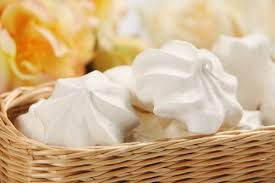

бізе
інградієнти і приготування
Цукор 8,5 столові ложки
Яєчний білок 3 штуки
Ванільний цукор 2 чайні ложки
1. Відокремлюємо білки від жовтків. Головне - ретельно їх відокремити, інакше білки будуть погано збивати і нічого не вийде. Я беру дві чашечки, в одну акуратно виливаю білки,
в інший залишаються жовтки (їх можна прикрити фольгою, прибрати в холодильник і потім що-небудь теж з них зробити).
ШПАРГАЛКА
Як відокремити білки від жовтків
2. У мірну склянку насипаємо цукор, до позначки 150 грам. Додаємо 2 чайні ложки (але можна і побільше,
так запах буде на весь будинок) ванільного цукру.
3. Заздалегідь розігріваємо духовку, але дуже слабко. Я включаю на 120 градусів.
ІНСТРУМЕНТ
Термометр для духовки
4. Беремо якусь миску, в якій будемо збивати білки (у мене для цього є спеціальна пластмасова посудина, в ній можна збивати все, що завгодно), міксер, і вперед!
Важливо, звичайно, щоб міксер був потужний. Якщо все в порядку, то 3-5 хвилин повинно цілком вистачити, щоб вийшла міцна піна, що не випаде, навіть якщо ви перекинете миску догори дном.
ІНСТРУМЕНТ
міксер
5. Висипаємо цукор зі склянки, збиваємо ще хвилин 5. Поки цукор більш менш не стане з піною одним цілим. Справу зроблено!
Щоб перевірити, наскільки все ідеально, можна провести віночками міксера по поверхні піни, і якщо залишаться нерухомі сліди, то все ок!
6. На деко кладемо аркуш паперу для випікання, щоб підходив за розміром.
ІНСТРУМЕНТ
Папір для випічки
7. Ну і накладаємо на нього майбутні безе в будь-якій формі! Я роблю чарівні штучки за допомогою пакетика з різними насадками
(щось на зразок кондитерського шприца, тільки простіше). Можна зробити маленькі безе або великі. Маленькі, до речі, швидше випікаються.
ІНСТРУМЕНТ
Рожок кондитерський
8. Ось і все майже! Ставимо в духовку при 120 градусах, на 50-60-80 хвилин, можна періодично перевіряти. Якщо зовні тверді, то пора виймати.
